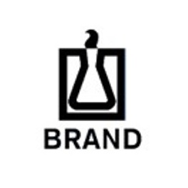
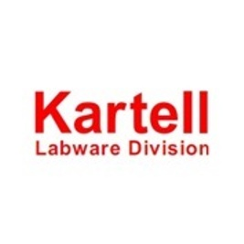
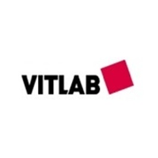
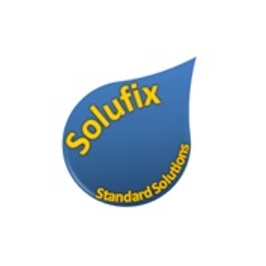

|

ברנדציוד מדידה זכוכית ופלסטיק Class A כולל תעודות כיול. מכשור לעבודה עם נוזלים. ציוד מתכלה. ועוד. תוצרת גרמניה. |

קרטלמוצרים מפלסטיק ברמה גבוהה. צינצנות לאחסון עם פקק כפול בעלות אישור מזון ו-FDA. ועוד. תוצרת איטליה. |

ויטלבציוד מדידה מפלסטיק Class A עם תעודות כיול. מוצרים מטפלון. מוצרים בעלי אישור למזון ו-FDA. ועוד. תוצרת גרמניה. |
Machery Nagelניירות סינון, פילטר סביבון ומימברנות. מכשירים וערכות לבדיקת מים ו-pH. כרומוטוגרפיה. ועוד. תוצרת גרמניה. |
||
Dr Ehrenstorferסטנדרטים לחומרי הדברה. מאושרים ונמצאים בשימוש משרד החקלאות. תוצרת גרמניה. |

סולופיקסתמיסות סטנדרטיות מוכנות לשימוש לפי תקן ISO 9001 כולל תעודות אנליזה. נמצא בשימוש ברוב המעבדות בארץ בתחום הרפואה, המזון, קוסמטיקה ועוד. תוצרת ישראל כחול לבן. |